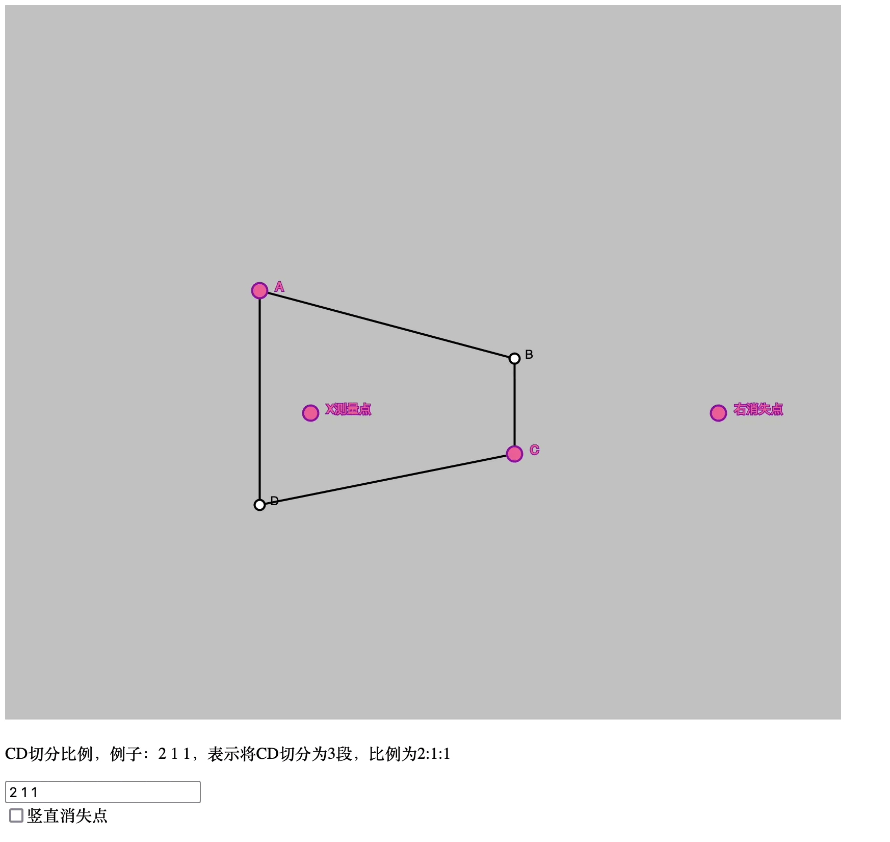
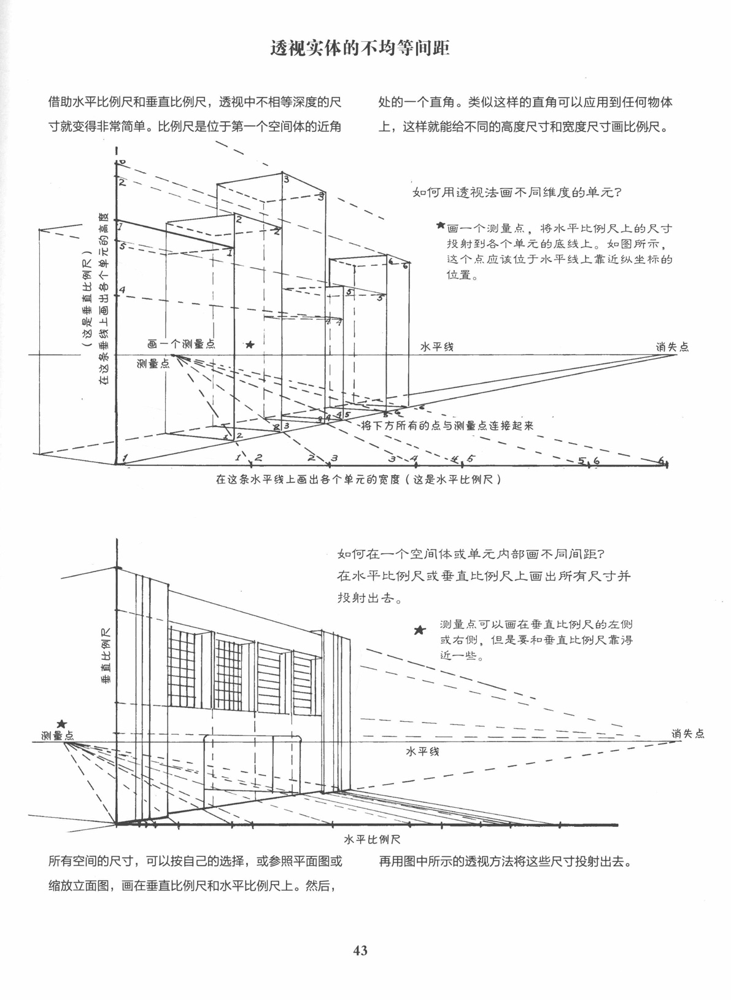

绘制任意深度的线条——路米斯的方法
除了画头颅，连透视也要强迫我按你说的做吗？路米斯，现在的你，很靓仔！
之前学习了基于平面作图的 n 等分点、倍增画法，以及基于线和消失点比例的 n 等分点、倍增的画法，但这两个方法都没有路米斯在《素描基础课》中所教授的方法全能和实用——它不止能绘制 n 等分点，甚至能绘制任意长度的线段（当然，对每个消失点都需要规定一个基准，因为指向消失点的线段的所看到的长度是随焦距和相机距离改变的），路米斯的方法均能胜任，而它只需要在平面的一条直线上找比例即可。
一个交互式示例见下：

tips
路米斯关于该画法的描述如下：

上面的交互式示例展示的已经足够清楚了，这里只提一下可能需要注意的地方/诀窍：
- 上面的图没有展示倍增线段的画法，但这玩意很明显 w
- 路米斯说测量点需要在视平线上，这个限制是没必要的，测量点可以在任意位置，只需要在做标尺的时候让标尺和测量点和消失点的连线平行；将测量点置于视平线上的话，测量点和消失点的连线就是水平的，因此标尺同样是水平的了
- 调整测量点的位置，让测量点和标尺上的线锁造成的三角形角度尽量正常，角度太小或太大会影响测量
- 可以尝试找多个测量点同时进行测量来避免误差
- 如果绘制对象过于复杂，建议 3d 辅助绘画
证明
证明个头，实践出真知！该交互式示例中测量点在任意位置时都能通过在标尺上找点来做任意比例，这对使用者来说已经足够。
本博客所有文章除特别声明外，均采用 CC BY-NC-SA 4.0 协议 ，转载请注明出处！